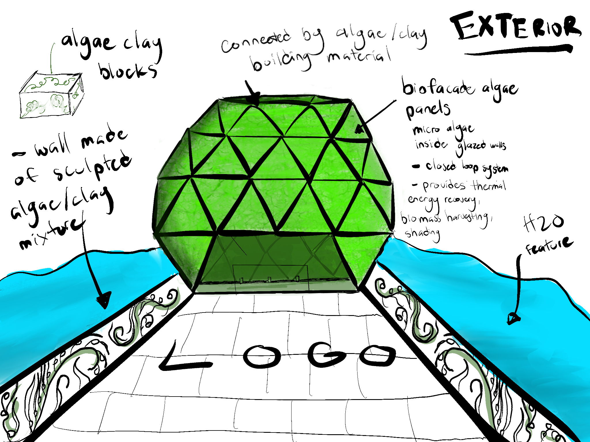

My Role
As a team, we had creative input in all aspects of the project. Individually, I was in charge of creating and designing the artifact which was an exterior and underground exhibit showcasing renewable resources and the vast variety of algae forms.
We chose our exhibit entrance to be dome shaped and made of algae solar panels that cultivates micro-algae to generate heat and biomass. Along the pathway to the dome will be algae sculptures made of algae cement. It was important that these features were in our artifact because they are natural closed loop renewable building materials that should be implemented world wide.
As you enter the dome it leads to our Sea Beneath Boundaries exhibit where there is a live algae bioluminescent tank, life-size forest, and endless learning opportunities of how we can protect and restore ecosystems through algae.
